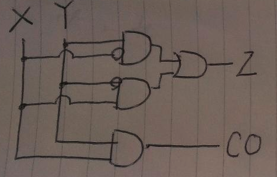
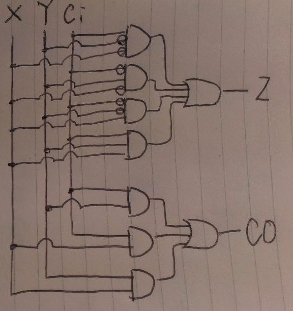
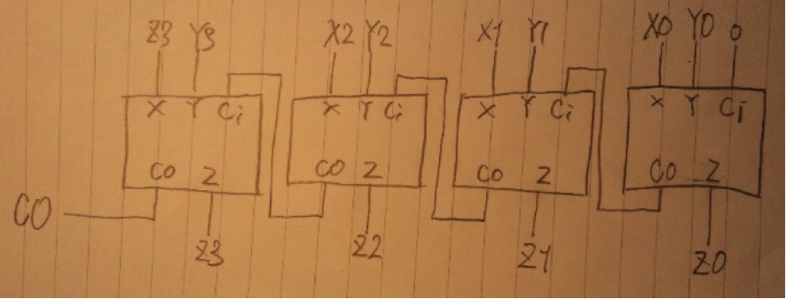
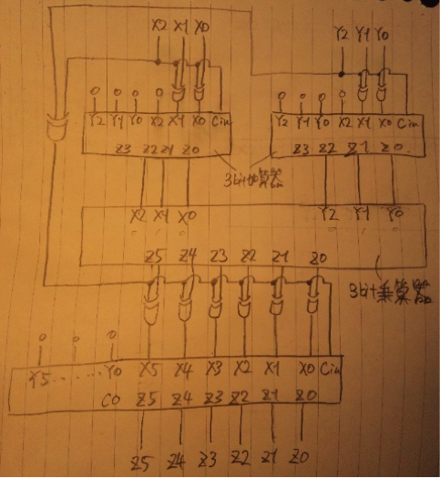

| v0 | v1 | v2 | v3 | v4 | |
| d0 | 0 | ∞ | ∞ | ∞ | ∞ |
| d1 | 0 | 1 | ∞ | 5 | 9 |
| d2 | 0 | 1 | 2 | 4 | 9 |
| d3 | 0 | 1 | 2 | 1 | 9 |
| d4 | 0 | 1 | 2 | 1 | 2 |
D(k+1) = D(k)(min(始点～目的地 , 始点～w + w～目的地 ) w = 0
ｗを経由してu～vの距離をそれぞれ更新すればよい。
D0:初期状態
| 始＼終 | v0 | v1 | v2 | v3 | v4 |
| v0 | 0 | 1 | ∞ | 5 | 9 |
| v1 | ∞ | 0 | 1 | 3 | ∞ |
| v2 | ∞ | ∞ | 0 | -1 | ∞ |
| v3 | ∞ | 1 | ∞ | 0 | 1 |
| v4 | 1 | ∞ | ∞ | ∞ | 0 |
D1:w=0を経由
| 始＼終 | v0 | v1 | v2 | v3 | v4 |
| v0 | 0 | 1 | ∞ | 5 | 9 |
| v1 | ∞ | 0 | 1 | 3 | ∞ |
| v2 | ∞ | ∞ | 0 | -1 | ∞ |
| v3 | ∞ | 1 | ∞ | 0 | 1 |
| v4 | 1 | 2 | ∞ | 6 | 0 |
D2:w=1を経由
| 始＼終 | v0 | v1 | v2 | v3 | v4 |
| v0 | 0 | 1 | 2 | 4 | 9 |
| v1 | ∞ | 0 | 1 | 3 | ∞ |
| v2 | ∞ | ∞ | 0 | -1 | ∞ |
| v3 | ∞ | 1 | 2 | 0 | 1 |
| v4 | 1 | 2 | 3 | 5 | 0 |
D3:w=2を経由
| 始＼終 | v0 | v1 | v2 | v3 | v4 |
| v0 | 0 | 1 | 2 | 1 | 9 |
| v1 | ∞ | 0 | 1 | 0 | ∞ |
| v2 | ∞ | ∞ | 0 | -1 | ∞ |
| v3 | ∞ | 1 | 2 | 0 | 1 |
| v4 | 1 | 2 | 3 | 2 | 0 |
D4:w=3を経由
| 始＼終 | v0 | v1 | v2 | v3 | v4 |
| v0 | 0 | 1 | 2 | 1 | 2 |
| v1 | ∞ | 0 | 1 | 0 | 1 |
| v2 | ∞ | 0 | 0 | -1 | 0 |
| v3 | ∞ | 1 | 2 | 0 | 1 |
| v4 | 1 | 2 | 3 | 2 | 0 |
D5:w=4を経由
| 始＼終 | v0 | v1 | v2 | v3 | v4 |
| v0 | 0 | 1 | 2 | 1 | 2 |
| v1 | 2 | 0 | 1 | 0 | 1 |
| v2 | 1 | 0 | 0 | -1 | 0 |
| v3 | 2 | 1 | 2 | 0 | 1 |
| v4 | 1 | 2 | 3 | 2 | 0 |
有向辺の数をeとする。
・Algorithm1
nとeの二重ループなので、O(ne)
・Algorithm1-ALL
Algorithm1を頂点数n分だけ行うので、O(n*ne) = O(n^2 * e)
・Algorithm2
頂点数nの３重ループなので、O(n^3)
頂点数より有向辺が多い場合、つまり e > n の場合はAlgorithm2の方が高速。
逆に有向辺ｎより有向辺の方が少ない場合、つまり e < n の場合はAlgorithm1-ALLの方が高速であることが分かる。
半加算器の真理値表
| X | Y | CO | Z |
| 0 | 1 | 0 | 1 |
| 1 | 0 | 0 | 1 |
| 1 | 1 | 1 | 0 |
| X | Y | CO | Z |

全加算器の真理値表
| Ci | X | Y | CO | Z |
| 0 | 0 | 0 | 0 | 0 |
| 0 | 0 | 1 | 0 | 1 |
| 0 | 1 | 0 | 0 | 1 |
| 0 | 1 | 1 | 1 | 0 |
| 1 | 0 | 0 | 0 | 1 |
| 1 | 0 | 1 | 1 | 0 |
| 1 | 1 | 0 | 1 | 0 |
| 1 | 1 | 1 | 1 | 1 |
簡単化して
CO = XY+XCi+YCi


※一番左の全加算器への入力はZ3ではなくX3
画像紛失。3bit加算器を２段の階層構造にすれば設計可能。１段目はY0,Y1とX2,X1,X0を入力に使い、２段目の入力はは1段目の出力とX2,X1,X0を使う。乗算器が載ってない論理回路の参考書はまず無いし、書き直すのが面倒なので以上でご了承願いたい。
画像無し。1〜(n-1)桁目まで普通に乗算し、n桁目（符号ビット）で結果から乗算結果を引くように設計すればよい。

符号付きのスマートな計算方法を知らなかった当時の自分の残念な設計。
１段目で両方共に正の値に無理矢理変換して２段目で乗算し、３段目で片方の入力の値が負だったらビット反転したものに１を加算している。ナイーブとは言え一応目的を果たす回路なので正解・・？
(2)のようにカスケード接続されていると、上位の桁は下位の桁の結果が生成されるまで待たされることになり、桁数に比例して遅延してしまう。そこで上位桁の入力を、下位桁の計算が完了するのを待たずに初期入力から生成する回路を加えることによって遅延時間をO( log N )にまで短縮することが可能。
初記入力から乗算に用いるそれぞれの加算器への入力を生成する先見回路を設計すればよい。